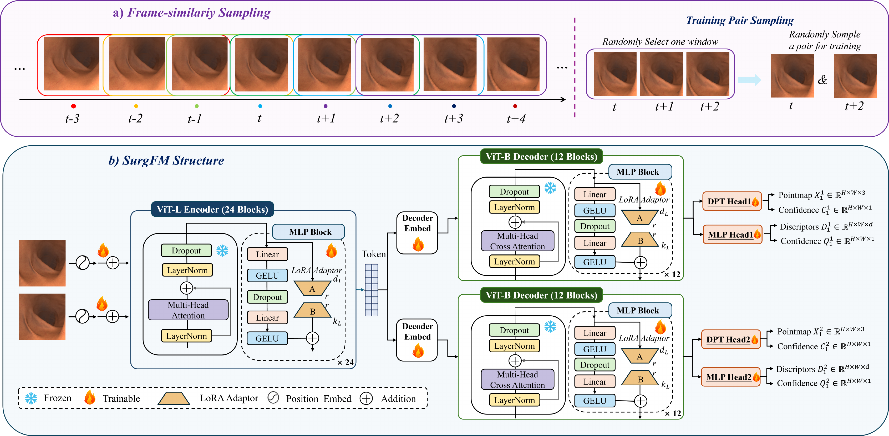
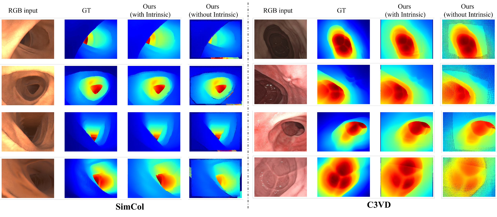
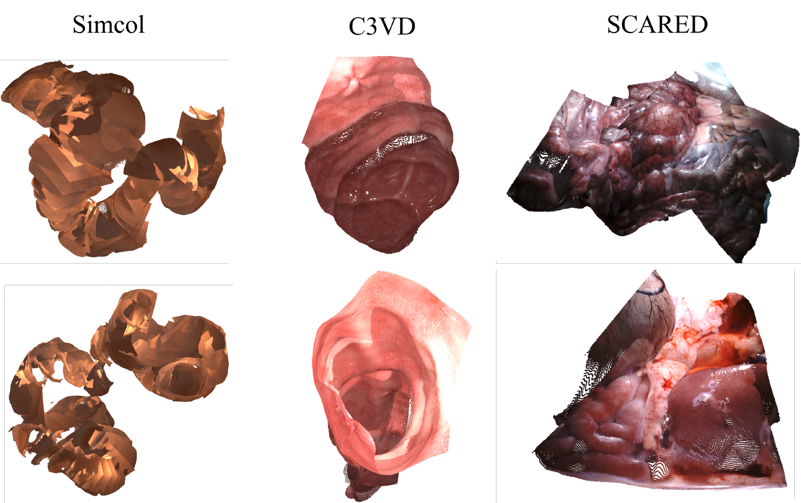
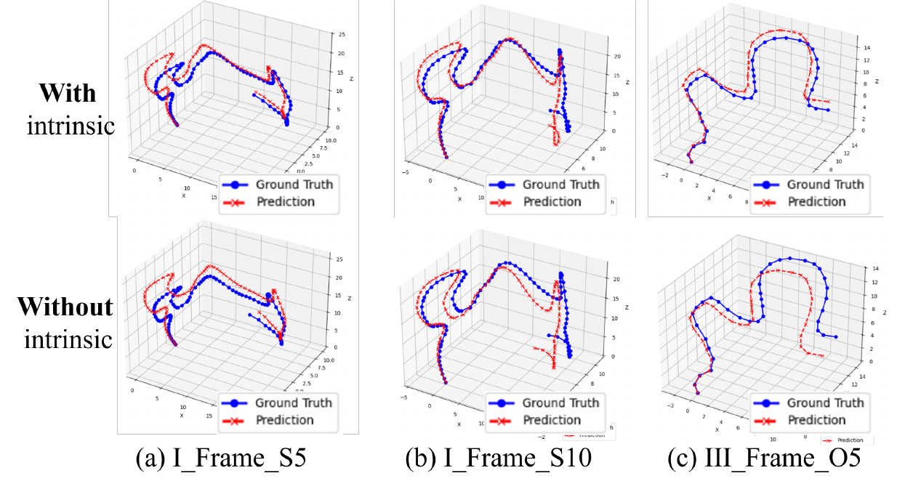

SurgFM-SLAM: Robust Surgical Scene Reconstruction via 3D Foundation Adaptation Model
Abstract
Surgical scene reconstruction is a critical prerequisite for intraoperative navigation in robotic surgery. Although deep neural networks (DNNs) have advanced surgical scene reconstruction, their performance degrades severely when confronted with texture-sparse biological tissues and dynamic illumination changes.
To this end, we develop an end-to-end SurgFM-SLAM framework for surgical scene reconstruction by exploring geometric representation priors of pretrained 3D foundation models (FMs) and SLAM. Specifically, we first design a frame-similarity sampling strategy to keep surgical scene consistency among sampled frames, and then develop a surgical foundation model (SurgFM) by employing a low-rank adaptation (LoRA) method to mine 3D strong structural geometry representations from 3D FMs with the aid of parameter-efficient finetuning techniques, aiming to effectively capture dynamic illumination conditions and informative textures from surgical environments.
Finally, we embed SurgFM into the SLAM backend to construct SurgFM-SLAM to perform robust surgical scene reconstruction in an end-to-end manner, including tracking, mapping, and relocalization. Extensive experiments on the SimCol dataset demonstrate that SurgFM-SLAM achieves competitive performance across depth estimation, camera pose estimation, and 3D reconstruction through comparisons to state-of-the-art methods. Additionally, zero-shot generalization tests on the C3VD and SCARED datasets manifest the generalization of SurgFM-SLAM.
Method
Unlike previous efforts that predominantly rely on photometric or rendering consistency at the image level, we ground depth and pose estimation as integral parts of robust and learned geometric priors. The full pipeline of SurgFM-SLAM consists of three tightly coupled components:
(1) Frame-similarity sampling strategy. From a temporal sliding window, we select frame pairs with strong visual overlap to provide stable training signals. This ensures that SurgFM learns robust correspondences despite the rapid viewpoint changes, occlusions, and specular highlights typical of endoscopic video.
(2) SurgFM: Surgical Foundation Model. Building on a pre-trained 3D foundation model, SurgFM is adapted to the surgical domain by inserting low-rank adapters (LoRA) into the MLP layers of both encoder and decoder blocks. All backbone weights are kept frozen, while position embeddings, decoder embeddings, and prediction heads are unfrozen to capture illumination-invariant geometric features specific to endoscopic imagery, while preserving zero-shot generalization to unseen surgical data.
(3) SLAM backend integration. The robust two-view priors produced by SurgFM (pointmaps and feature descriptors) are integrated into a deep learning-based SLAM backend, which drives camera tracking, dense mapping, and relocalization. This yields globally consistent reconstructions of extended surgical sequences in real time, while the system supports both known and unknown camera intrinsics.

(a) Frame-similarity sampling strategy. From a temporal sliding window, frame pairs with strong visual overlap are selected to provide stable training signals, ensuring SurgFM learns robust correspondences despite viewpoint changes and specular highlights typical of endoscopic video. (b) SurgFM structure. Lightweight low-rank adapters are inserted into the MLP layers of both encoder and decoder blocks; backbone weights are frozen, while position embeddings, decoder embeddings, and prediction heads remain unfrozen.
SurgFM-SLAM Reconstruction Demo
Experimental Results
We evaluate SurgFM-SLAM on three datasets: SimCol (intra-domain training and evaluation), C3VD (zero-shot evaluation), and SCARED (zero-shot evaluation). With camera intrinsics, SurgFM-SLAM achieves superior depth estimation performance on both SimCol and C3VD, outperforming state-of-the-art baselines across most metrics.
Our method achieves an Abs Rel of 0.046 on SimCol and 0.083 on C3VD (zero-shot), demonstrating both strong intra-domain accuracy and robust cross-domain generalization. SurgFM-SLAM further delivers the lowest relative pose error on SimCol, while producing dense, structurally coherent 3D reconstructions across all three datasets.
Quantitative Depth Estimation Results
| Method | C | SimCol (Train & Test) | C3VD (Zero-shot) | ||||||
|---|---|---|---|---|---|---|---|---|---|
| Abs Rel ↓ | Sq Rel ↓ | RMSE ↓ | σ ↑ | Abs Rel ↓ | Sq Rel ↓ | RMSE ↓ | σ ↑ | ||
| Monodepth2 | ✓ | 0.212 | 0.995 | 1.165 | 0.763 | 0.170 | 2.317 | 9.276 | 0.769 |
| Endo-SfM | ✓ | 0.200 | 0.918 | 1.127 | 0.778 | 0.164 | 2.232 | 9.311 | 0.770 |
| Depth-Anything | ✓ | 0.273 | 1.471 | 1.583 | 0.732 | 0.246 | 6.423 | 14.501 | 0.684 |
| HR-Depth | ✓ | 0.110 | 0.720 | 0.570 | 0.947 | 0.152 | 2.102 | 9.293 | 0.787 |
| MonoViT | ✓ | 0.082 | 0.295 | 0.576 | 0.951 | 0.116 | 1.014 | 6.712 | 0.881 |
| Lite-Mono | ✓ | 0.133 | 1.375 | 0.606 | 0.954 | 0.111 | 0.762 | 5.474 | 0.890 |
| AF-SfM | ✓ | 0.086 | 0.358 | 0.585 | 0.954 | 0.117 | 1.324 | 7.520 | 0.882 |
| EndoDAC | ✗ | 0.082 | 0.287 | 0.611 | 0.955 | 0.105 | 0.905 | 6.180 | 0.880 |
| EndoDAC | ✓ | 0.076 | 0.266 | 0.555 | 0.957 | 0.083 | 0.584 | 4.655 | 0.949 |
| SurgFM-SLAM | ✗ | 0.165 | 0.622 | 0.918 | 0.903 | 0.188 | 2.301 | 5.943 | 0.848 |
| SurgFM-SLAM | ✓ | 0.046 | 0.038 | 0.343 | 0.976 | 0.083 | 0.748 | 3.254 | 0.953 |
Bold indicates best performance, underlined indicates second-best performance. ↓ indicates lower is better, ↑ indicates higher is better. "C" refers to whether the method requires camera intrinsic parameters.
Camera Trajectory Tracking on SimCol
| Method | C | ATE ↓ | RPE ↓ |
|---|---|---|---|
| MonoViT | ✓ | 0.0156 ± 0.0126 | 0.0090 ± 0.0075 |
| Endo-SfM | ✓ | 0.0154 ± 0.0121 | 0.0078 ± 0.0077 |
| AF-SfM | ✓ | 0.0150 ± 0.0113 | 0.0081 ± 0.0060 |
| HR-Depth | ✓ | 0.0147 ± 0.0138 | 0.0094 ± 0.0081 |
| Monodepth2 | ✓ | 0.0146 ± 0.0129 | 0.0092 ± 0.0074 |
| Lite-Mono | ✓ | 0.0144 ± 0.0114 | 0.0082 ± 0.0059 |
| EndoDAC | ✓ | 0.0143 ± 0.0112 | 0.0079 ± 0.0053 |
| SurgFM-SLAM | ✓ | 0.0144 ± 0.0076 | 0.0011 ± 0.0003 |
| SurgFM-SLAM | ✗ | 0.0175 ± 0.0091 | 0.0012 ± 0.0003 |
Absolute Trajectory Error (ATE) and Relative Pose Error (RPE) on SimCol. SurgFM-SLAM achieves the lowest RPE, indicating accurate frame-to-frame motion estimation.
Qualitative Results



Top: depth estimation comparison on SimCol and C3VD. Middle: 3D reconstructions on SimCol, C3VD, and SCARED. Bottom: estimated trajectories with and without intrinsics on SimCol.
Video Gallery
Surgical scene reconstruction results across different scenarios
Scenario B5
Scenario B10
Scenario B15
Scenario S5
Scenario S10
Scenario S15
Scenario O1
Scenario O2
Scenario O3
BibTeX
@article{surgfmslam2026,
title = {SurgFM-SLAM: Robust Surgical Scene Reconstruction via 3D Foundation Adaptation Model},
author = {Lu, Xiaoxi and Liu, Gan and Dong, Bingwen and Chen, Guangcheng and Gong, Mingdao and Hu, Yan and Zhang, Xiaoqing and Liu, Jiang},
journal = {Under Review},
year = {2026}
}